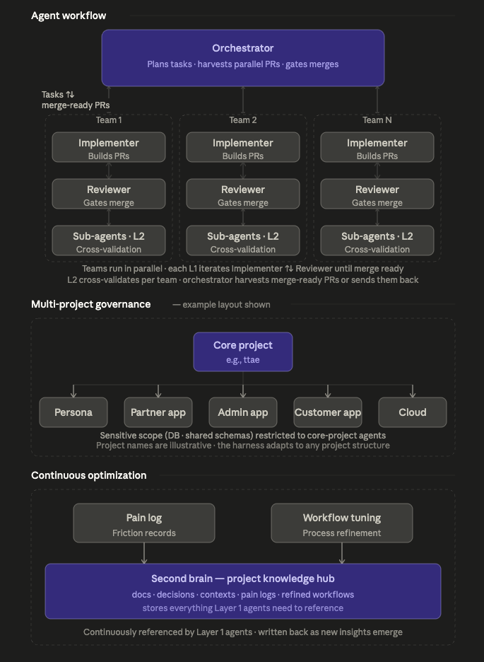

Claude Code Harness OS

Claude Code Harness OS is a reusable AI-native engineering operating system I designed to make agent-assisted development more structured, scalable, and reliable.
Instead of treating AI coding sessions as isolated chats, I externalized workflow state, role definitions, review structure, and handoff artifacts into durable files and repeatable protocols. The goal was not just faster coding, but a disciplined execution model for parallel, reviewable development across multiple projects.
Standard AI coding workflows are powerful but fragile. Context disappears across sessions, review quality varies, important decisions stay trapped in chat, and one human can still become the bottleneck when multiple repositories and workstreams are moving at once.
I wanted a way to increase execution leverage without losing rigor.
I designed the system itself:
- implementer / reviewer / orchestrator role model
- workflow definitions and state transitions
- review and handoff protocols
- artifact-driven continuity patterns
- multi-repo operating rules
- bootstrap structure for new sessions
- human-gated merge and quality-control boundaries
I also applied the harness directly in active TTAE development rather than keeping it as a theoretical framework.
The key design decision was to separate planning, implementation, review, and merge-handoff responsibilities instead of letting one agent do everything in an unstructured loop.
At the top level, the orchestrator handles planning, task issuance, and final PR harvesting. By acting primarily as a harvester of completed work rather than as the main implementer, the orchestrator can efficiently manage multiple PRs finishing in parallel.
Layer 1 is centered on implementer and reviewer agents. The implementer completes the task and opens a PR, and the reviewer has authority to evaluate that PR as either merge ready or needs changes. Until a PR reaches merge ready, the implementer and reviewer continue working around the PR through active iteration and discussion. Once it reaches merge ready, the orchestrator reviews the outcome and decides whether to merge it or send it back for another Layer 1 cycle.
Layer 2 adds optional sub-agents under both the implementer and reviewer. These sub-agents can be spawned for delegated development, domain-specific review, or cross-validation tasks, then report their findings back upward. That structure creates a two-stage validation path — Layer 2 verification followed by Layer 1 verification — which improves quality beyond a single-pass agent workflow.
I also designed the harness to manage a core project and multiple derived projects within one operating model. In the TTAE environment, the core repository acts as the authority for shared architecture and sensitive boundaries such as database-related work, while derived repositories such as ttae-persona, ttae-partner-app, ttae-admin-app, ttae-customer-app, and ttae-cloud reference the core project for context and structure. This allows one harness to coordinate a multi-project system without flattening ownership boundaries.
Continuously increasing agent productivity
One of the oldest and most persistent challenges in this system has been improving agent productivity without letting quality collapse. Whenever agent work became slower, more wasteful, or harder to coordinate, I treated that as a system problem to investigate rather than as random friction.
To improve it, I built and repeatedly used a /pain-log skill to record concrete sources of slowdown, confusion, and coordination cost, then refined the operating model based on those findings. I have also spent ongoing effort on context intelligence: thinking carefully about how context should be split, managed, and referenced so agents do not repeatedly waste effort reloading or misreading the same state. That work has also led into an early second-brain system for durable structured reference across ongoing work. It is still evolving, but it reflects a long-running pattern in how I approach agent productivity: observe bottlenecks, externalize them, and redesign the workflow.
Preventing AI workflow drift
A major challenge was that agent work could easily drift when state lived mainly in chat history and responsibilities were not clearly separated.
To address that, I moved workflow state into durable artifacts, made role boundaries explicit, and required PR-centered handoffs rather than informal conversational transitions.
Preserving quality under parallelism
Higher agent throughput is not useful if review quality collapses.
I addressed that by giving the reviewer clear authority over merge ready versus needs changes, keeping the orchestrator as a final human-governed harvesting layer, and adding optional Layer 2 sub-agent cross-validation so important work could be checked twice before final acceptance.
Managing multiple related repositories safely
A single AI workflow can become chaotic when multiple connected projects evolve at once, especially when some repositories contain more sensitive architecture or database-related responsibilities than others.
I handled that by defining a core-versus-derived project model: the core repository retained authority over sensitive shared boundaries, while derived repositories referenced that core context without inheriting the same access assumptions. This preserved reuse and coordination without collapsing governance.
This is the clearest example of orchestration as an engineering capability in my work. It shows that I can design the execution system that makes AI useful in practice: structured, reviewable, durable, accountable, and capable of scaling across multiple parallel projects.